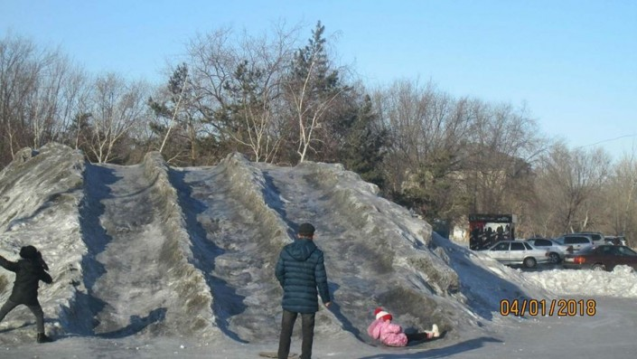

How does ironworks affect ecology?
During production processes lots of CO₂ and CO gases are released. CO is toxic and has dark color and smoke smell. Both gases are greenhouse.
Kazakhstan
Temirtau where the industry resides, is in the list of top 10 polluted cities in the world by IQAir
international organization. In 2018 the snow was dark due to pollution.

Photo credit: Denis Gorobets. Photo from astanatimes.com
The Karaganda Metallurgical Plant, along with the Temirtau Electrometallurgical Plant's chemical and
metallurgical plant, is the main air polluter in Temirtau. ArcelorMittal Temirtau(now Qarmet) and
Kazakhmys account
for
up to 70% of the total emissions in the Karaganda region.
Future
In 2024, in order to reduce its environmental impact, Qarmet began implementing a gasification project for its production facilities, which is the largest environmental project in the plant's history.